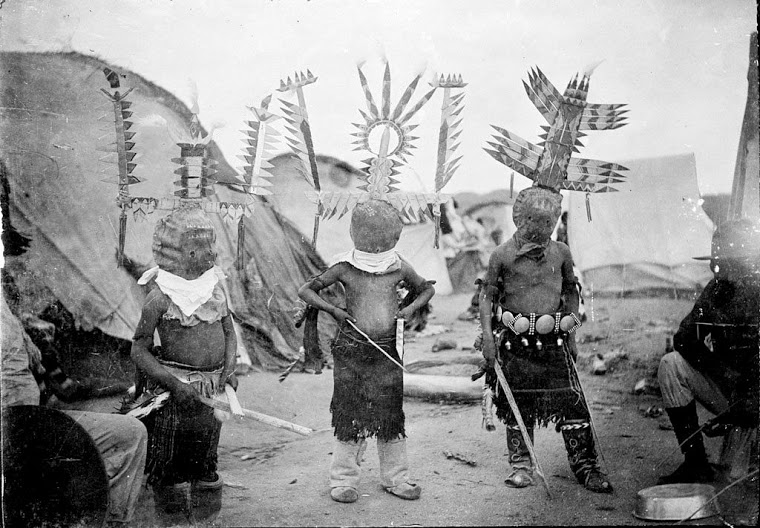
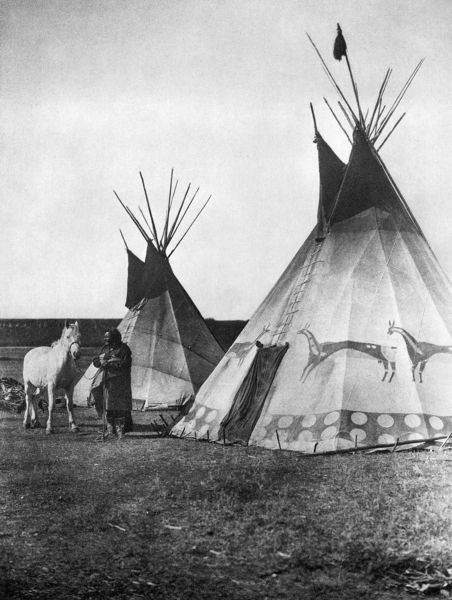
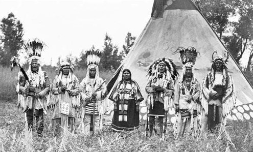
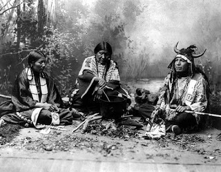
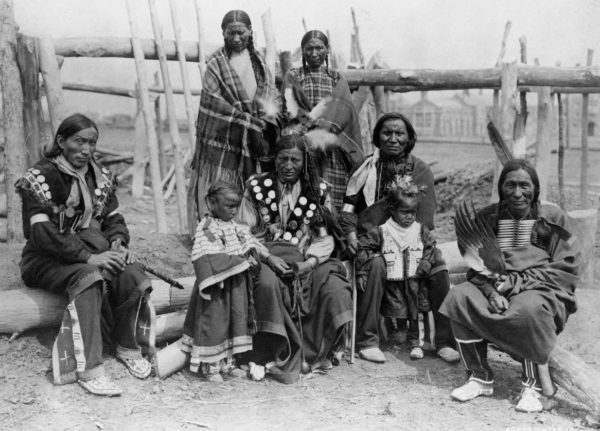
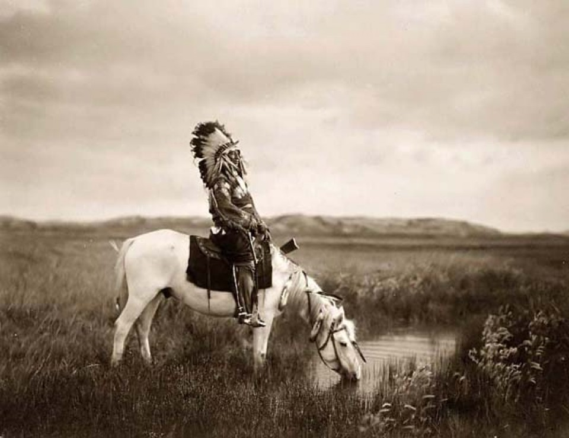
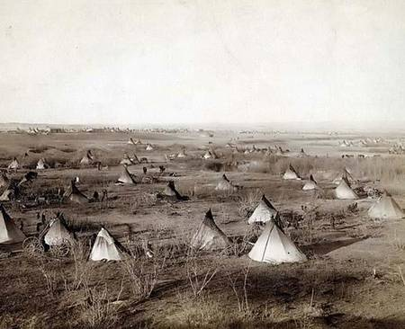
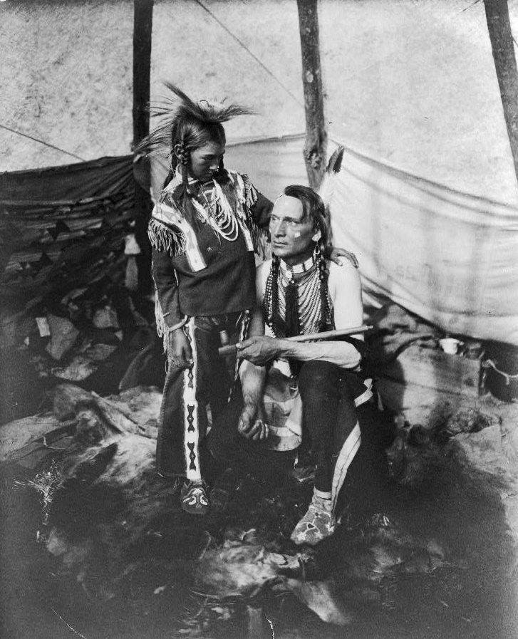

Popolo nomade dedito prevalentemente alla caccia e alla raccolta.
Vivevano in piccole capanne chiamate Wickiup, generalmente
fatte di frasche che davano una forma sferica o a cupola;
venivano anche utilizzate erba o canne prese nei letti dei fiumi.
La sua costruzione spettava esclusivamente alla donna mentre
gli uomini si dedicavano alla caccia ma senza allontanarsi troppo
dal resto della tribù, perchè dicevano che c'era cibo in ogni dove
se uno sapeva dove anche se la stessa Natura implacabile offriva

Bambini pronti per la danza dello "Spirito Libero"
loro poca selvaggina.
Gli Apache condividevano tutti una fondamentale visione del mondo:
l'orientamento religioso e il nucleo mitico. Le cerimonie venivano
organizzate per curare le malattie, per mantenere giusto il mondo e
per tener lontano il male. Tutti i gruppi erano matrilineari e
disponevano di elaborate cerimonie di pubertà per le ragazze, in
quanto il raggiungimento dell'età adulta era ritenuto sacro e molto
significativo.
Vestivano con abiti di pelle di daino e portavano i
capelli lunghi e sciolti, tenuti fermi da una benda allacciata
intorno alla testa; gli uomini indossavano anche un gonnellino aperto
sui fianchi. I loro alti mocassini, allacciati sotto le ginocchia,
erano un'importante parte del loro abbigliamento, poiché il terreno
era coperto di rovi, boscaglia e cactus e gli permettevano di correre
con estrema agilità.
I BLACKFOOT

Tepee coperte di pelle di bufalo
Vivevano una vita prevalentemente nomade nelle verdi praterie,
mangiando carne di bufalo, che era il loro cibo principale, cacciando cervi,
alci e pecore di montagna, ma mangiavano anche polli selvatici anche se pochi
oltre a pesce. Si nutrivano anche di bacche ed erbe del bosco selvatiche,
abitando in tepee coperti di pellicce derivate dai loro territori di caccia.
In inverno tutte le bande si raggruppavano in un unico grande insediamento
per rimanere tutti insieme al caldo e in compagnia. Coltivavano solamente
un unica erba: il tabacco. Erano anche abili artisti e artigiani, molto
apprezzati per gli strumenti di tutti i giorni, la costruzione di armi e
i vestiti (venivano chiamati blackfoot proprio per i loro mocassini di colore scuro).

Famiglia della tribù dai pieni neri
Possedevano acconciature uniche con piume che svettavano verso l'alto.
Praticavano la danza del sole così come le altre tribù delle pianure dove
partecipavano anche le donne contrariamente a quanto avveniva tra le altre culture.
Le donne avevano anche una società personale propria divisa da quella degli uomini chiamata Motokik,
dove si pensava che la benedizione di una madre avrebbe dato una vita fortunata
al benedetto. Come passaggio tra l'età adolescenziale e quella adulta,
i giovani, andavano in cerca della propria visione dove avrebbero dimostrato
il coraggio, la resistenza e la tenacia nel conseguire un obiettivo difficile.
Gli uomini dei piedi neri, così come avveniva per la società matriarcale
femminile della tribù, avevano a loro volta una associazione per soli uomini
chiamata Ikunuhkats che significa "tutti compagni".
GLI CHEYENNE

Due uomini e una donna che cucinano selvaggina
La tribù degli Cheyenne è stata nominata così dai Francesi perchè nei primi incontri questi notarono
che, non avendo ancora i cavalli, impiegavano i cani (Chien in francese) per trasportare i loro beni. Nella loro
lingua gli Cheyenne chiamavano se stessi Dzi-tsis-tas (Gente Uguale). Con la migrazione
essi cambiarono modo di vivere diventando dei tipici cacciatori nomadi delle pianure passando
quindi dalla coltivazione di mais e di piselli alla caccia di animali selvatici come
bufali, cervi, alci, orsi e tacchini. La maggior parte degli oggetti usati come ornamenti delle tepee
Lo sciamano della medicina
erano cuciti con pelli di cervo (pelle di daino) e bufalo. Gli abiti erano spesso decorati con pitture,
penne di porcospino o perline. I vestiti invece sia per uomini che per donne erano delle tuniche
anch'esse fatte di pelle di daino ed erano adornati con perline lunghe come simbolo di coraggio,
onore e realizzazione oltre che piume d'aquila le quali rappresentavano, riflettevano la loro identità
tribale e i valori familiari che celebravano gli atti di valore degli antenati.
La religione e le credenze della tribù Cheyenne erano basate sull'animismo che comprendeva l'idea
spirituale o religiosa secondo cui l'universo e tutti gli oggetti naturali animali, piante, alberi, fiumi,
rocce montuose, ecc ecc. avevano un'anima o uno spirito. Le tribù delle Grandi Pianure come i Cheyenne credevano
in Manitou, il Grande Spirito. Oltre al Grande Spirito gli Cheyenne veneravano anche il famoso
"Sciamano della medicina" o "Profeta della Medicina" che chiamavano "Maheo".
I LAKOTA

Wotitakuye = Famiglia
I Lakota sono uno dei tre gruppi dialettali in cui si articolava la grande alleanza sioux.
Gli altri due gruppi dialettali sono denominati dakota orientali (Santee) e occidentali (Yankton e Yanktonay).
Sono stati nomadi e cacciatori per lunghi anni e sono ricordati per aver messo per iscritto il loro
dialetto, che rappresenta infatti un elemento speculiare del linguaggio nato intorno al 1840.
Il concetto di spiritualità lakota è basato sull'idea di wakan, manifestazione della forza soprannaturale
che domina l'intero universo comprese tutte le persone e le cose, incarnata nella figura massima di Wakan

Wacantognaka = Generosità
Tanka, e può essere spiegato come la sacralità di tutte le forme della creazione che, in quanto tali, sono
parte ed espressione della stessa energia creatrice primordiale da cui è nata la vita.
Wacantognaka, la parola Lakota per la generosità, significa contribuire al benessere del proprio popolo per
tutta la vita attraverso la condivisione e la gratuità, questa condivisione non è solo per le cose o i beni
ma riguarda anche le emozioni come la simpatia, la compassione, la gentilezza, significa inoltre essere
generosi con il proprio tempo personale. L'atto di dare senza avere nulla in cambio può rendere una persona
migliore e rendere felici noi stessi.
Wotitakuye, che significa "parentela", è uno dei valori più importanti provenienti dal tiyospaye,
la famiglia allargata, esso comprende le idee di vivere in armonia, appartenenza, relazioni, come la vera
ricchezza e l'importanza della fiducia negli altri.
I SIOUX

Villaggio Sioux a cerchio
In origine probabilmente i Sioux erano agricoltori seminomadi ma ben presto si trasformarono in cacciatori
nomadi, spesso al seguito delle mandrie di bisonti. Da questo animale si ricavavano carne e pelli.
Le donne si occupavano dei bambini, dell'orto e soprattutto della casa e l'etica sessuale era molto rigida

Uomo e figlio con la pipa della pace
ed era biasimata ogni forma di violazione dei relativi codici comportamentali, anche se ampiamente praticata
era la fuga prematrimoniale allorché un matrimonio era avversato dalle famiglie degli interessati.
L'abitazione dei Sioux è una tenda conica di 4/5 metri di diametro coperta di pelli di bisonte.
Da 10 a 20 pertiche di legno erano alzate sul terreno in un circolo, legate insieme all'estremità superiore
e coperte da pelli di bisonte cucite insieme; in alto rimanevano due aperture mobili per far uscire all'
occorrenza il fumo. Un foro ovale in basso, posizionato ad est, consentiva l'accesso; l'interno aveva il
focolare nel centro e tutto intorno sedili e letti di pelliccia. Sempre all'interno un controtelo fungeva
da isolante per l'umidità, per il freddo e il caldo. Il posto riservato al capofamiglia era di fronte all'
entrata, quindi ad ovest, la zona più protetta dalle correnti d'aria. A sud stava la donna; qui teneva tutti
gli oggetti che le servivano per i lavori domestici, ed anche tutti i letti della famiglia. A nord si
trovavano varie suppellettili e i giacigli degli ospiti.
Tra gli elementi artistici principali si annoverano le pipe (a focolaio diritto e a gomito), i pali totemici
(mantokan), le maschere e le figure umane. Frequenti sono le pitture su roccia o dentro le caverne, anche
se la manifestazione più diffusa è la pittura su pelli. Tra le raffigurazioni principali vi sono gli
avvenimenti sociali, lo spiritismo e la simbologia.